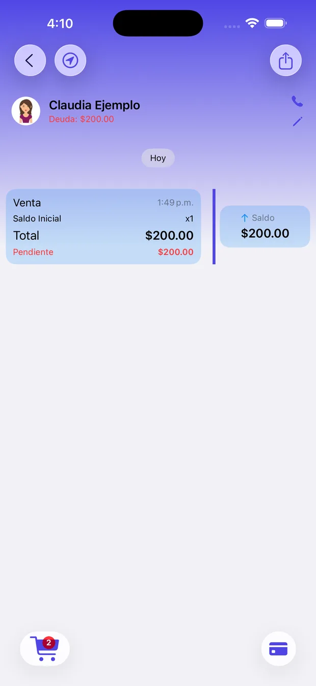
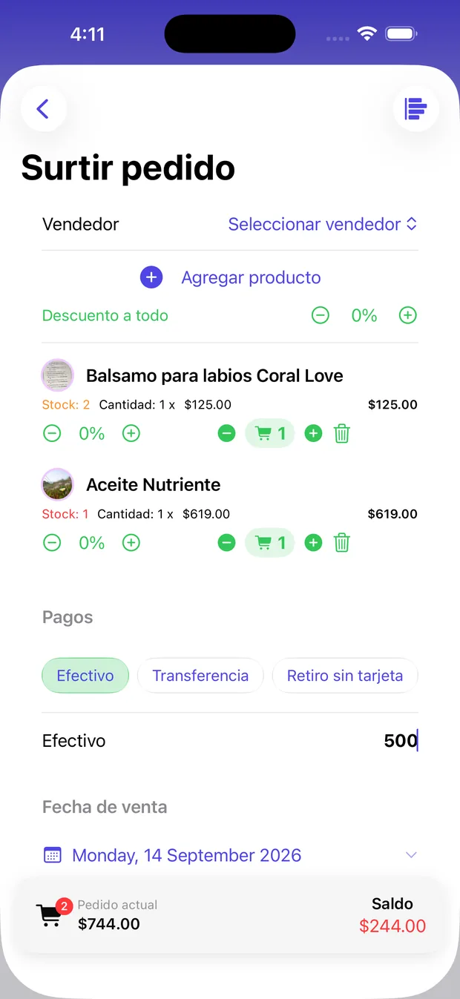
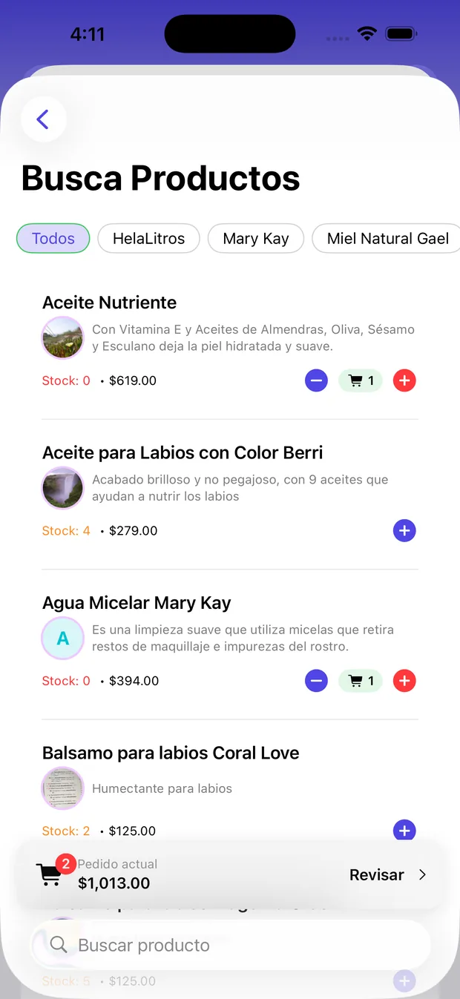
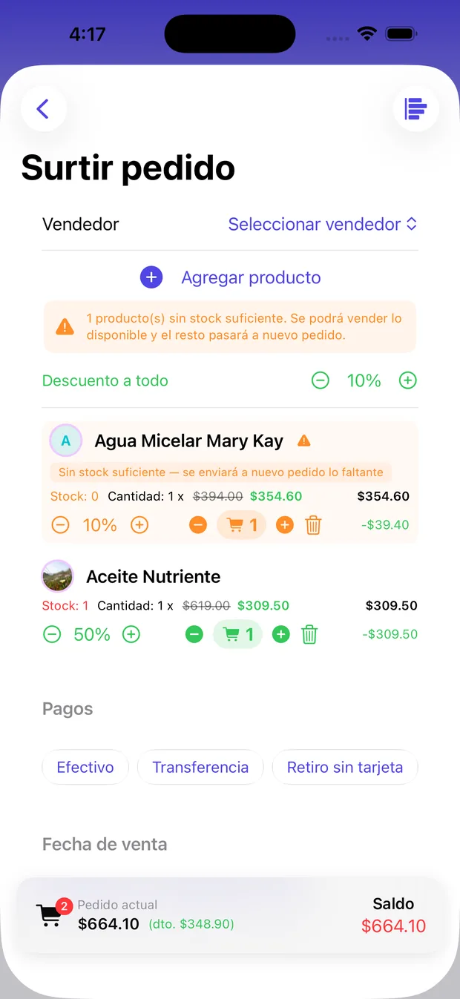
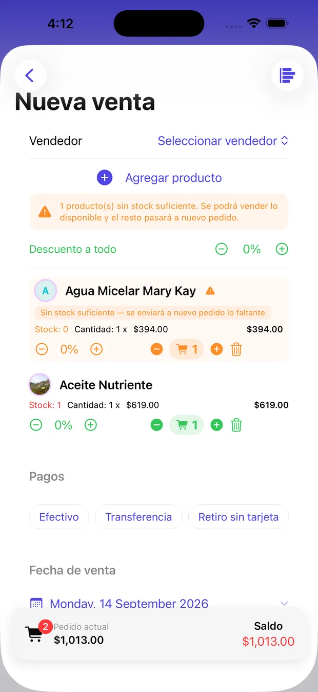
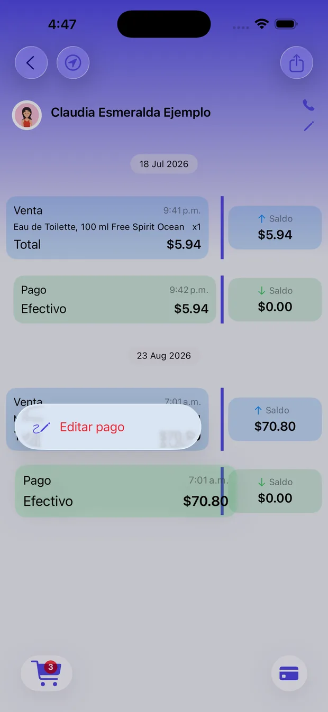
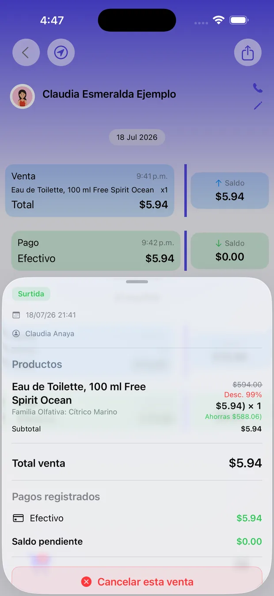

Da de alta a tus clientes en segundos, registra lo que ya te debían y empieza a venderles.
Con tu catálogo ya cargado, el siguiente paso son tus clientes. No tienes que capturarlos todos de golpe: puedes irlos dando de alta conforme les empiezas a vender.
Y si algún cliente ya te debía dinero de antes de usar VendeMás, no hay problema: la app tiene la opción de Saldo Inicial para que esa deuda quede registrada desde el primer día.
La categoría te sirve para agrupar y filtrar a tus clientes después. La ubicación en el mapa es la que usan las Rutas de Visita: si la ajustas bien desde ahora, más adelante VendeMás podrá calcularte la mejor ruta y avisarte cuando vayas pasando cerca.
Al guardar el cliente, la app te lleva automáticamente a su historial de movimientos. Como es un cliente nuevo y todavía no tiene ningún movimiento, ahí te aparecerá la opción Saldo Inicial.

Si el cliente no te debe nada, no hagas nada aquí: puedes empezar a venderle de inmediato.
Es la pantalla que vas a usar todos los días. Desde el historial de cada cliente haces sus pedidos, sus ventas, sus pagos y abonos, y consultas todo lo que ha pasado con él. Si te aprendes esta pantalla, ya te aprendiste la app.
Al seleccionar un cliente se abre su historial de movimientos, con su deuda actual siempre visible bajo el nombre. Desde ahí tienes todo a la mano:
| Dónde | Qué hace |
|---|---|
| Ícono del carrito abajo a la izquierda | Inicia una nueva venta, o le da seguimiento a un pedido guardado si el cliente tiene uno pendiente. El globito rojo te dice cuántos productos trae. |
| Ícono de la tarjeta abajo a la derecha | Registra un pago o abono del saldo pendiente. |
| Tocar un movimiento | Abre el detalle de esa venta o de ese pago. |
| Flecha de navegación arriba a la izquierda | Te lleva a la ubicación del cliente, y desde aquí también puedes actualizar su punto en el mapa. |
| Ícono de compartir arriba a la derecha | Genera su estado de cuenta en PDF del último día, última semana o último mes, y lo manda por WhatsApp, correo o cualquier otro medio. |
| Teléfono y lápiz a la derecha del nombre | Llamar al cliente o editar sus datos. |
Toca el ícono del carrito. Se abre la ventana Nueva venta (o Surtir pedido, si le estás dando seguimiento a uno guardado) con los productos seleccionados, el stock de cada uno y el total abajo en todo momento.

El botón Agregar producto abre un buscador muy completo: filtra por comercio o escribe una o varias palabras clave. De cada producto ves su stock y su precio, y si ya lo tienes agregado a esta venta, también la cantidad.

Puedes aplicar un descuento a todo el pedido, o un descuento individual producto por producto. La app te muestra el precio original tachado, el precio con descuento y cuánto le estás rebajando a tu cliente.

Cuando agregas algo de lo que no tienes suficiente, el producto se marca en naranja y aparece un aviso arriba. Aquí está lo bueno: VendeMás lo resuelve solo. Vende lo que sí tienes en existencia y manda a un nuevo pedido lo que falta. No pierdes la venta ni tienes que llevar aparte la cuenta de lo que le quedaste debiendo.

En la misma pantalla, abajo, tienes la sección Pagos: eliges Efectivo, Transferencia o Retiro sin tarjeta, capturas el monto y la app te calcula el saldo que queda. También puedes ajustar la fecha de venta, muy útil cuando estás capturando algo que pasó otro día.
Y si eres varias personas vendiendo, en Vendedor indicas quién hizo esta venta.
Las opciones para terminar están en el ícono de lista de la esquina superior derecha. Son inteligentes: solo te muestra lo que tiene sentido según dónde estés.
| Si estás en… | Te aparece |
|---|---|
| Nueva venta | Guardar pedido · Vender |
| Surtir pedido | Borrar pedido · Guardar pedido · Surtir pedido |
| Opción | Cuándo usarla |
|---|---|
| Vender | Cierras la venta. Se descuenta el inventario y se genera el movimiento en el historial del cliente. |
| Guardar pedido | El cliente apartó productos pero todavía no se los entregas. Queda pendiente y lo retomas después desde el carrito. |
| Surtir pedido | Ya tienes la mercancía del pedido guardado y se la vas a entregar. |
| Borrar pedido | El cliente se arrepintió o el pedido ya no procede. |
Al terminar, la app te regresa al historial del cliente con el movimiento ya registrado.
En el historial del cliente, toca el ícono de la tarjeta, abajo a la derecha. Ahí capturas el pago completo o el abono parcial, eliges la forma de pago e indicas la fecha, para que la actividad del cliente quede con las fechas correctas aunque la captures después.
Mantén presionado el movimiento del pago y con el menú que aparece puedes editar la forma de pago, el monto o la fecha.

Toca cualquier venta del historial y se abre su detalle completo: fecha, vendedor, productos con sus descuentos y lo que ahorró tu cliente, el total, los pagos registrados y el saldo pendiente.
Desde ahí también puedes cancelar esa venta si se capturó por error o el cliente devolvió la mercancía.

Catálogo cargado, clientes dados de alta, ventas y cobros registrados. De aquí en adelante VendeMás ya te está llevando el inventario, las deudas y el historial de cada persona.
El siguiente paso natural son las órdenes de compra, para que tu costo real se vaya afinando con cada pedido que le haces a tu proveedor, y las rutas de visita, para organizar a quién le toca cada día.
¿Necesitas más asesoría o tienes alguna duda?
holachavini@gmail.comCon mucho gusto te apoyamos a la brevedad.